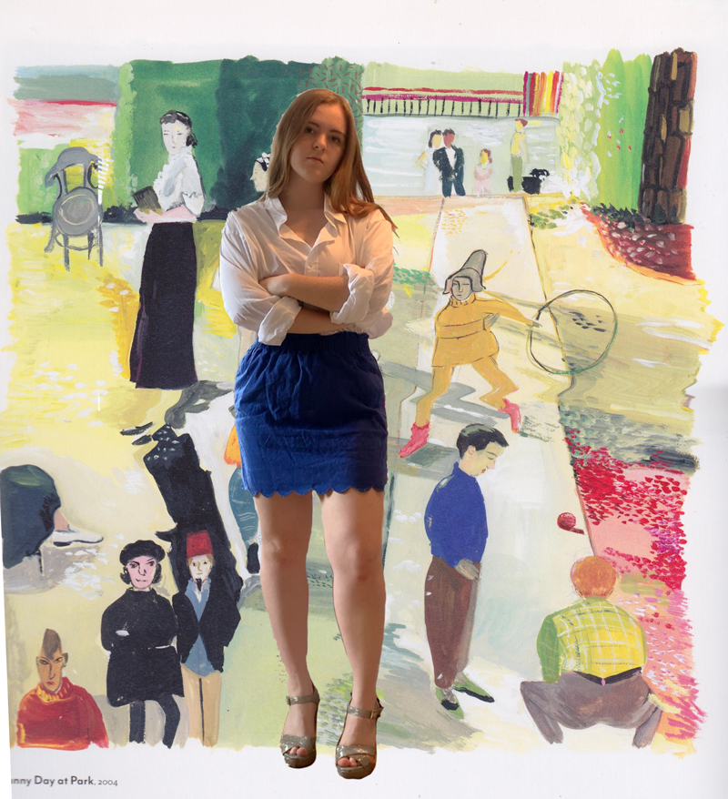
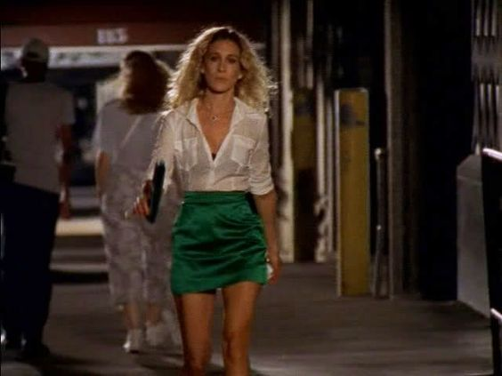
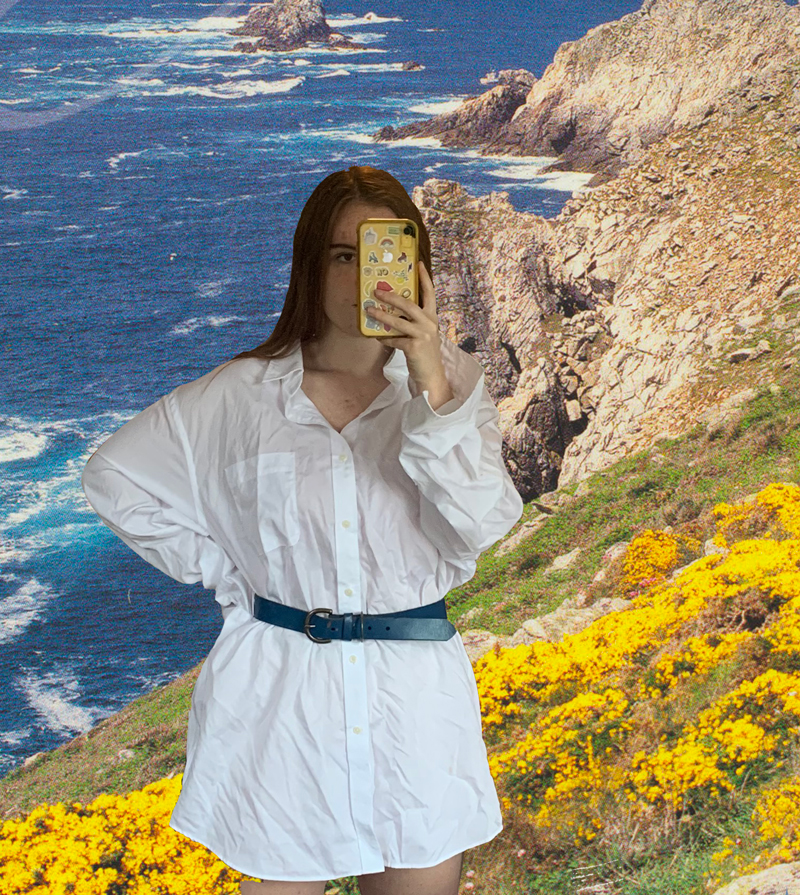
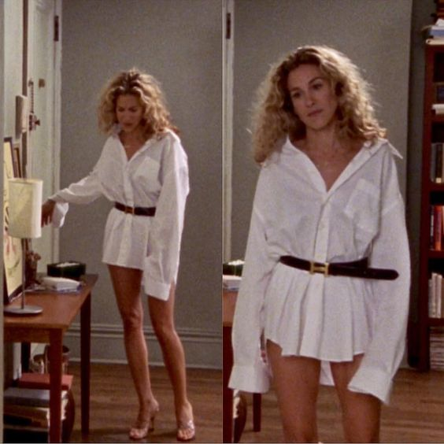

and I couldn't help but wonder, have I been underestimating the power of a white button up all this time??
While it's incredibly innacurate to the lives of many real women in NYC, it's undeniable that Sex and the City is an iconic show. For me, it's like a hot cup of tea on a cold day. Entirely predictabe and accountable when you're in need of killer 2000's fashion, and it also feels like hanging out with old girl friends. At the same time, I have a hard time connecting with a lot of the fashion on a person level, even though I love watching it. This is mostly because I don't share the tiny frame and beautiful unruly locks that Carrie Bradshaw has. That being said, I decided to try and put my own spin on two looks from the show.
First was this simple getup. I didn't have a green skirt, but royal blue did the trick.
This one is a bit of a stretch, but since I already had the white button up on, I thought, why not? I definitely would never wear this again, but it was fun for a minute.
